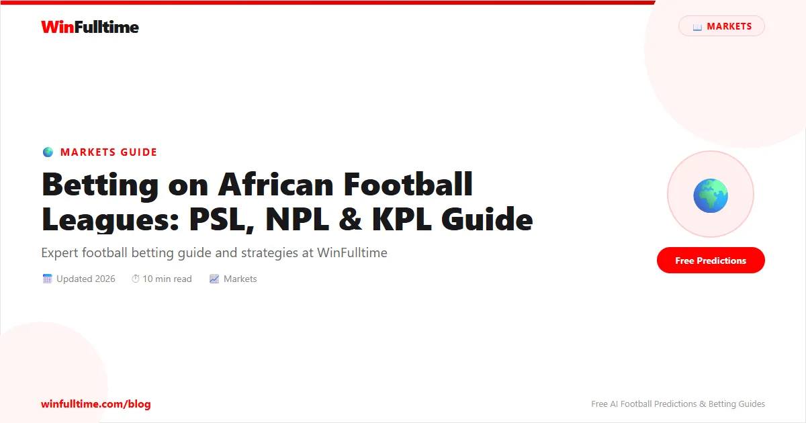

Betting on African Football Leagues: PSL, NPL & KPL Guide

While most football bettors focus on the Premier League and European competitions, a rich opportunity exists in African football leagues. The South African Premier Division (PSL), Nigerian Professional Football League (NPL), Kenyan Premier League (KPL), and Ghana Premier League (GPL) are home to passionate fans, unpredictable matches, and — crucially for smart bettors — less efficient markets where bookmaker odds can be significantly off-market.
Why Bet on African Football Leagues?
African leagues are under-researched by international bookmakers and tipsters. This creates inefficiencies that can be exploited. Here's why serious bettors diversify into African markets:
- Better odds value: Less information available = more mispriced odds
- Local knowledge advantage: You may know teams better than the bookmaker does
- Patriotism angle: Support your local teams with informed bets
- Alternative to saturated European markets
Major African Leagues Covered
| League | Country | Top Teams | Avg Goals/Match |
|---|---|---|---|
| Premier Soccer League (PSL) | South Africa | Mamelodi Sundowns, Kaizer Chiefs, Orlando Pirates | ~2.3 |
| Nigerian Professional Football League (NPFL) | Nigeria | Rivers United, Enyimba, Plateau United | ~2.1 |
| Kenyan Premier League (KPL) | Kenya | Gor Mahia, AFC Leopards, Tusker FC | ~2.0 |
| Ghana Premier League (GPL) | Ghana | Asante Kotoko, Hearts of Oak, Medeama SC | ~2.2 |
| Egyptian Premier League | Egypt | Al Ahly, Zamalek, Pyramids FC | ~2.4 |
Best African Leagues for Betting
1. South African Premier Division (PSL)
The PSL is Africa's most commercially developed league. Matches are well-documented, and major bookmakers like Betway South Africa offer deep markets on PSL matches. The league is relatively low-scoring with strong home advantage — about 52% of matches end in home wins.
Best markets: 1X2, Under 2.5, Both Teams to Score
2. Nigerian Professional Football League (NPFL)
The NPFL is Nigeria's top tier and attracts significant local betting action. It's known for being low-scoring — averaging around 2.1 goals per game. Bet9ja offers extensive NPFL coverage. Draws are common (~28% of matches), making the Draw No Bet market valuable.
Best markets: Draw No Bet, Under 2.5, 1X2
3. Egyptian Premier League
Africa's highest-ranked league on CAF's coefficients, dominated by Al Ahly and Zamalek. Bookmakers offer strong odds but Al Ahly's dominance makes backing them at short prices common. The value is often in the underdogs and total goals markets.
African Football Betting Strategies
Know the Calendar
African leagues often have irregular schedules due to weather (rainy seasons), international break periods, and infrastructure issues. Teams may play multiple matches in quick succession or go weeks without playing. This affects form and fitness — a team playing three matches in 10 days will be fatigued, while a rested team has an edge. Check the schedule on Flashscore before betting.
Home Advantage Is Real and Significant
In African football, home advantage is more pronounced than in European leagues. Without modern stadiums, consistent fan support, and travel fatigue being a major factor (especially for cross-country travel in large nations like Nigeria and Kenya), home teams win over 50% of matches in most African leagues. The 1X2 home win is often underpriced.
Weather Factor
Rain in parts of West and East Africa can dramatically slow games, reduce goal scoring, and increase draws. During the rainy season (typically April–September in Nigeria, June–October in Kenya), consider backing Under 2.5 and Draw options more aggressively.
Research Sources for African Leagues
Your edge comes from local knowledge. Use these resources to build an information advantage:
- Flashscore — live scores and basic stats
- Soccerway — detailed match statistics and lineups
- Local social media and sports news sites
- KPL official site for Kenya
Pro Tip: Focus on One or Two Leagues
Rather than betting across many African leagues, pick one or two you can follow closely. Deep knowledge of a specific league — knowing manager tendencies, player injuries that won't appear on international sites, stadium conditions — is what creates a genuine edge. Transfermarkt provides squad info for top African leagues.
Common Mistakes Betting on African Football
Over-relying on European-style data: Stats platforms often don't capture African league data with the same depth. xG, possession stats, and advanced metrics are sparse — adapt your analysis approach.
Ignoring managerial changes: African clubs change managers frequently. A sacking or appointment that won't make international news can dramatically affect a team's performance. Follow local sports outlets.
Underestimating travel: Nigeria is geographically massive. A team from Lagos traveling to Kano faces significant fatigue. Factor in travel distance, especially during midweek matches.
The Bottom Line
Betting on African football leagues — PSL, NPFL, KPL, GPL — is one of the most underserved markets in global sports betting. With less information available and bookmakers relying on limited data, informed bettors with local knowledge have a genuine edge. Start with the league you follow most, track results methodically, and build your database over time.
Get Football Predictions Daily
WinFulltime covers major leagues worldwide. Combine our predictions with your own research on African leagues.
View Predictions →